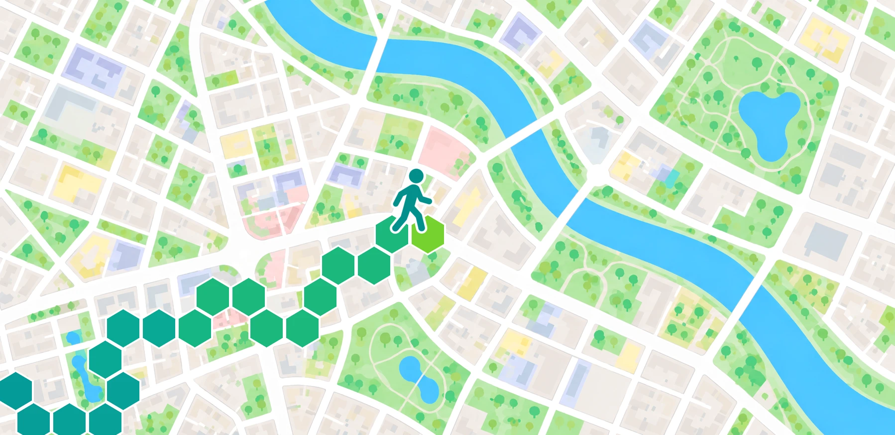

Tile mode
Hexagonal tiles mark the places you’ve visited. Each tile’s color shows how many recorded trips passed through it.
Walk, run, ride, or drive. Tile Trails records your route with GPS and marks the places you pass through with hexagonal tiles.
See the map modes
Switch between Tile mode and Exploration mode in Settings to see the same trips on two different maps.
Hexagonal tiles mark the places you’ve visited. Each tile’s color shows how many recorded trips passed through it.
Gray fog covers unexplored areas and clears where you’ve been. Scan the map to find a new route for your next trip.
In either mode, filter the Tile Map by year, month, or activity to see your distance, moving time, and tile counts.
Choose an activity and start recording. See your route, distance, moving time, average speed, and tile count as you go. Recording can continue in the background, and you can pause and resume it.
Open a saved trip to see its route and stats. You can rename the trip or shorten it if you forgot to stop recording.
Tile mode shows achievements such as your longest line of tiles and largest hexagon. Exploration mode shows your explored area and largest connected explored area.
You can use Tile Trails without an account. The app stores your trips on your device, and you can back up and restore completed trips using a ZIP file.
Recording requires precise location and permission to access it in the background. Displaying maps and looking up place names may use a network connection.
Privacy Policy